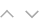
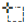
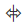
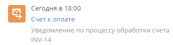

Бизнес-процесс — это некая последовательность шагов, ведущая к цели. Вы можете создавать и поддерживать высокоструктурированные последовательности действий, выполняемых как автоматически системой, так и пользователями. Подробнее: Бизнес-процессы в Creatio.
Создание и редактирование бизнес-процессов выполняется в рабочем пространстве дизайнера процессов.
Дизайнер процессов является инструментом BPMS. В Creatio также реализован подход кейс-менеджмента. Сравнение двух систем управления процессами доступно в статье Бизнес-процессы и динамические кейсы в Creatio онлайн-курса Введение в бизнес-процессы.
Рабочее пространство (Рис. 1) дизайнера процессов содержит все необходимые элементы управления и инструменты для создания процессов.
Панель инструментов (1)
На панели инструментов есть следующие кнопки:
- Сохранить — используется для сохранения процесса.
- Запустить — запуск бизнес-процесса из дизайнера процессов.
- Отмена — возможность отменить несохраненные изменения.
Меню Действия дизайнера процессов содержит команды:
-
Исходный код — открывает окно просмотра исходного кода процесса.
-
Метаданные — открывает окно просмотра метаданных процесса.
-
Копировать диаграмму — создает копию диаграммы в разделе Библиотека процессов.
-
Экспорт метаданных — экспортирует метаданные текущего бизнес-процесса в файл формата *md.
-
Журнал процесса — открывает раздел Журнал процессов в отдельной вкладке браузера.
-
Сохранить текущую версию — сохраняет текущую версию бизнес-процесса. Например, если есть несколько версий бизнес-процесса, то по этой команде сохраняется только та версия, с которой вы работаете.
-
Сделать актуальной версией — устанавливает текущую версию бизнес-процесса как актуальную. Всякий раз при запуске бизнес-процесса запускается его актуальная версия.
-
Параметры процесса — открывает список параметров процесса. Подробно назначение и использование параметров описано в статье Параметры процесса.
 — открывает область настройки процесса справа.
— открывает область настройки процесса справа.
 — открывает справочные материалы на Академии.
— открывает справочные материалы на Академии.
— используется для поиска на текущей диаграмме элементов процесса по названию.
Поиск в дизайнере процессов
Функция поиска в дизайнере процессов упрощает навигацию и переключение между элементами диаграммы при настройке и отладке бизнес-процесса. Поиск производится по названию или коду элемента.
Для поиска (Рис. 2) нажмите кнопку или воспользуйтесь комбинацией клавиш Ctrl+F на клавиатуре.
В строке поиска введите запрос и нажмите “Поиск элементов” или Enter на клавиатуре. Количество найденных элементов процесса отображается в правой части поля (Рис. 3).
Воспользуйтесь кнопками , чтобы переключаться между найденными элементами диаграммы. Кроме того, для перехода к следующему элементу можно нажать на клавиатуре Enter или F3, а для перехода к предыдущему элементу используйте комбинацию Shift+F3 (Рис. 4).
Для упрощения навигации все найденные элементы бизнес-процесса, включая связи, выделены рамкой, а выбранный элемент подсвечивается оранжевым цветом (Рис. 5).
Для выбранного элемента также автоматически открывается страница настройки.
Чтобы закрыть поле поиска, нажмите ”Спрятать поиск” или ESC на клавиатуре.
Рабочая область дизайнера (2)
В рабочей области дизайнера процессов осуществляется основная работа по построению бизнес-процесса. Добавить элементы процесса в рабочую область дизайнера можно следующими способами:
-
Перетащить элемент в рабочую область дизайнера процессов из панели элементов процесса.
-
Выбрать элемент в контекстном меню любого из ранее добавленных элементов и перетащить в рабочую область. В этом случае на диаграмму процесса будет добавлен новый элемент, связанный с предыдущим потоком управления.
Область элементов (3)
Область элементов содержит:
- Инструменты, которые используются для работы с диаграммой.
- Список основных элементов, которые вы можете использовать для создания бизнес-процессов.
Инструменты
С помощью инструмента “Выделение” вы можете выбрать и переместить элемент в рабочей области дизайнера.
Инструмент “Лассо” позволяет выделить сразу несколько элементов диаграммы (Рис. 6).
Инструмент “Произвольное перемещение” (Рис. 7) дает возможность передвигать элементы на диаграмме вправо/влево или вверх/вниз. Например, вы можете зажать правую клавишу мыши и протащить курсор вниз. В этом случае все элементы, которые находятся ниже курсора мыши, сдвинутся вниз.
Элементы процесса
Перетащите нужные элементы в рабочую область дизайнера, чтобы добавить их на диаграмму процесса.
Все элементы процесса объединены в группы, которые отображаются в области элементов:
|
Действия пользователя. Добавляет на диаграмму элементы, которые требуют выполнения определенных действий пользователем системы. |
|
|
Действия системы. Добавляет на диаграмму элементы, которые инициируют автоматическое выполнение предусмотренных процессом действий, а также подпроцессы. |
|
|
Простое. Добавляет на диаграмму начальное событие Простое. По нажатию кнопки |
|
|
Генерация сигнала. Добавляет на диаграмму промежуточное событие Генерация сигнала. По нажатию кнопки |
|
|
Останов. Добавляет на диаграмму завершающее событие Останов. |
|
|
Логический оператор Исключающее “ИЛИ”. Добавляет на диаграмму логический оператор Исключающее “ИЛИ”. По нажатию кнопки |
Панель настройки элементов (4)
На панели настройки элементов (4) вы можете задать значения параметров элемента процесса. Подробнее о назначении и использовании параметров читайте в статье Параметры процесса. Перечень параметров на панели зависит от типа элемента.
Основной режим
В основном режиме панель настройки элемента содержит основные параметры элемента и поля для связи с другими сущностями системы. Список полей в основном режиме различается для разных элементов и подробно рассмотрен при описании каждого отдельного элемента.
Расширенный режим
В расширенном режиме на панели настройки свойств элемента отображаются дополнительные параметры элемента и связи с другими сущностями системы.
Для перехода в расширенный режим нажмите кнопку в области настройки свойств элемента и выберите команду Расширенный режим (Рис. 8).
В расширенном режиме доступны для настройки следующие параметры:
- Имя — системное название элемента бизнес-процесса, состоящее из букв латиницы и цифр. Используется системой для определения элемента. По умолчанию код генерируется автоматически, но может быть отредактирован. Код не может содержать специальных символов.
- Журналировать — установите признак, чтобы выполнение процесса можно было отслеживать в разделе Журнал процессов.
- Сериализировать в БД — установите признак, чтобы значения параметров выполняемого процесса были сохранены в БД. Сериализация необходима для продолжительных процессов. Например, если в процессе создана новая активность, которая должна быть завершена только через некоторое время, все параметры процесса будут сохранены и процесс сможет быть возобновлен в любое время, даже после выхода из системы.
- Выполнять следующие элементы в фоновом режиме — признак определяет, как будут выполняться все следующие за текущим элементом шаги процесса — автоматически в фоновом режиме или с участием пользователя. Больше информации о способах выполнения шагов процесса доступно в статье Выполнить шаги процесса.
- Если для элемента процесса снят признак Выполнять следующие элементы в фоновом режиме, то при переходе процесса на следующие шаги, предполагающие участие пользователя (например, заполнение страницы записи), будут открыты соответствующие страницы редактирования. Например, если элемент Открыть страницу редактирования расположен на диаграмме процесса после элемента, для которого снят признак Выполнять следующие элементы в фоновом режиме, то для пользователя сразу же откроется соответствующая страница редактирования.
- Если для элемента процесса установлен признак Выполнять следующие элементы в фоновом режиме, то все следующие шаги, требующие участия пользователя, отобразятся на вкладке Задачи по бизнес-процессам коммуникационной панели. Такие задачи (например, открытие страниц) не начнут выполняться, пока пользователь не кликнет по ним на вкладке Задачи по бизнес-процессам. При этом все действия системы будут выполнены в фоновом режиме без отображения маски загрузки, чтобы пользователь не ожидал завершения процесса. Например, если элемент Открыть страницу редактирования расположен на диаграмме процесса после элемента, для которого установлен признак Выполнять следующие элементы в фоновом режиме, то новая задача по бизнес-процессам отобразится на коммуникационной панели пользователя. Если на диаграмме процесса после такого элемента следуют требующие сложных и длительных расчетов элементы из группы Действия системы, то такие расчеты будут выполнены в фоновом режиме, а маска загрузки отображаться не будет. Такой вариант может вызвать задержку выполнения процесса, если пользователь, ответственный за выполнение действия по процессу, в момент создания задач по бизнес-процессу не вошел в систему.
Признак Выполнять следующие элементы в фоновом режиме может быть установлен:
-
Для всех элементов из группы Действия пользователя.
-
Для всех элементов из группы Начальные события, кроме элемента Стартовый таймер. По умолчанию признак установлен для начального события Сигнал.
-
Признак установлен и недоступен для редактирования для элементов Обработка сигнала и Обработка таймера группы Промежуточные события.
- Учитывать время в фильтре — установите признак, чтобы при настройке фильтрации по дате также учитывалось время.
Контекстное меню элемента (5)
Контекстное меню элемента также используется для добавления элементов на диаграмму процесса, но содержит только те элементы, которые можно добавить на диаграмму после выбранного элемента.
— меняет тип текущего элемента.
— удаляет текущий элемент.
— связывает текущий элемент с другим с помощью исходящего потока.
Панель управления масштабом (6)
Команда "Сбросить масштаб" восстанавливает исходный размер и расположение диаграммы процесса, если масштаб был изменен (Рис. 9).
Настройки процесса
Любой бизнес-процесс характеризуется набором свойств, управление которыми осуществляется на вкладке Настройки страницы настройки бизнес-процесса (Рис. 10). Чтобы открыть страницу настройки бизнес-процесса, кликните курсором мыши в рабочей области дизайнера процессов.
На странице доступны следующие следующие поля:
- Заголовок — название бизнес-процесса, которое будет отображаться в интерфейсе системы для пользователя. Поле Заголовок отображается в верхней части страницы в рабочей области дизайнера.
- Код – внутрисистемное название процесса, используемое системой для идентификации. По умолчанию код генерируется автоматически, но может быть отредактирован. Имя указывается латиницей без использования пробелов и специальных символов.
-
Версия — текущая версия процесса. Поле недоступно для редактирования. Заполняется автоматически во время сохранения новой версии процесса.
- Тег – теги, используемые для фильтрации и идентификации процессов. Если процесс отмечен тегом “Бизнес-процесс”, он отображается в разделе Библиотека процессов.
- Описание процесса — предназначено для внесения детальной информации о процессе.
- Пакет — название пакета, в который включен процесс.
- Максимальное число повторений — установите лимит на количество повторных запусков бизнес-процесса. Цель данной настройки заключается в том, чтобы исключить бесконечный цикл процесса. Процесс автоматически завершится по достижении лимита на любом элементе.
- Заголовок экземпляра процесса – укажите заголовок для экземпляров данного процесса. Заголовки экземпляров процесса отображаются на вкладке Задачи по бизнес-процессам коммуникационной панели. По умолчанию в данном поле указана системная переменная #Название процесса#. Чтобы сделать уведомления по шагам процесса более информативными для пользователя, укажите в поле параметр процесса и/или выражение с помощью элемента Формула. Например, для процесса обработки счета укажите в качестве заголовка экземпляра процесса следующую формулу: "Уведомление по процессу обработки счета №" + #Читать данные счета.Первый элемент результирующей коллекции.Номер#. В результате в уведомлениях по шагам данного бизнес-процесса будет отображаться фактический номер счета, который необходимо обработать (Рис. 11).
Рис. 11 — Пример уведомления по шагам бизнес-процесса
- Активен — поле недоступно для редактирования. Признак Активен снимается автоматически после отключения процесса в разделе Библиотека процессов.
- Журналировать — установите признак, чтобы выполнение процесса можно было отследить в разделе Журнал процессов.
- Сериализировать в БД — установите признак, чтобы значения параметров выполняемого процесса были сохранены в базе данных. Сериализация необходима для продолжительных процессов. Например, если в процессе создана новая активность, которая должна быть завершена только через некоторое время, все параметры процесса будут сохранены и процесс сможет быть возобновлен в любое время, даже после выхода из системы.
Снятие признака Сериализировать в БД обозначает, что параметры данного процесса будут сохранены в памяти без сохранения в базе данных. - Актуальная версия — признак, указывающий на актуальность данной версии процесса. Признак можно установить или снять на странице свойств процесса.
- Использовать системный контекст безопасности — управляет контекстом безопасности, в котором будет выполняться логика процесса, реализованная в элементах Задание-сценарий. Если признак установлен, то элемент Задание-сценарий будет выполняться в контексте безопасности системного пользователя. Системный пользователь указывается в системной настройке Пользователь для выполнения системных операций. Для всех новых бизнес-процессов признак Использовать системный контекст безопасности установлен по умолчанию. Благодаря этому появилась возможность использовать одинаковый код без дополнительных операций с UserConnection как для процессов пользователей основного приложения, так и для пользователей портала.